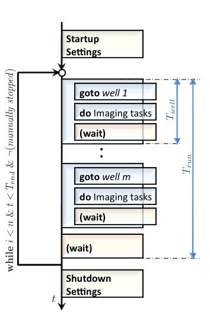
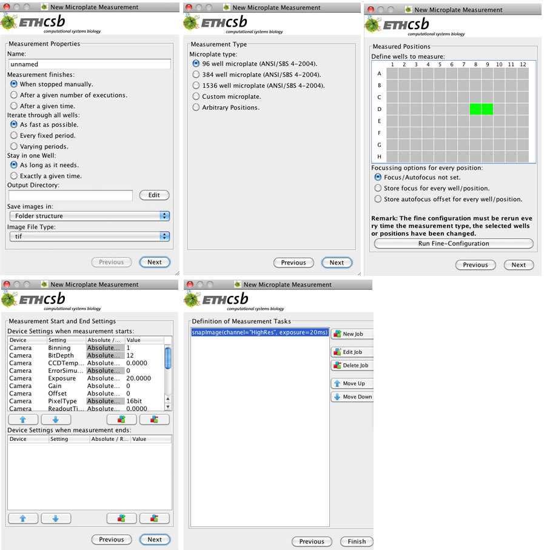

Setting up a Microplate Measurement
General Informations
The option microplate measurement found in New Measurement->Microplate Measurement helps to perform an identical imaging protocol for several wells and/or positions in a microplate. The wells have to be selected and combined with the imaging protocol consisting of several subelements, called jobs. The set of jobs form a task, which sends these jobs in a given order into a queue from where they are executed one by one for each well by the microscope. First the stage has to move to its location, and the focus/autofocus has to be adjusted. Then the microscope starts imaging and maybe pause for a certain time. Both, the movement of the plate, the focus, as well as the waiting are done automatically for every well, such that only the imaging procedure has to be defined. The imaging procedure is the same for each well. The Flowchart of a microplate measurement is described in Figure 1. In the following chapters we will explain, how thw single parts of this flowchart can be configured.
|  | Figure 1: Flowchart of a microplate measurement. The small rectangles represent single actions of the microscope. The large surrounding rectangles group the actions associated to one well together, and are for visualization proposes only. The perpendicular axis is the time axis, T_end corresponds to the total running time of the whole measurement, T_run to the running time of one iteration through all wells, and T_well to the time needed to image one well. The number of executions n, the total running time of the measurement T_end, or the option manually stop the experiment defines the total duration of the measurement. |
General Properties for an Experiment
The parameters for each microplate measurement are grouped in four classes and are displayed in four windows, called Measurement Properties, Measurement Type, Measured Positions, Measurement Start and End Settings and Imaging Procedure. The Next and Previous buttons switch between the different windows. After defining all the parameters and clicking the Finish-button a window, called Measurement control window, opens.

{kind=link}
{kind=link}
{kind=link}
{kind=link}
{kind=link}